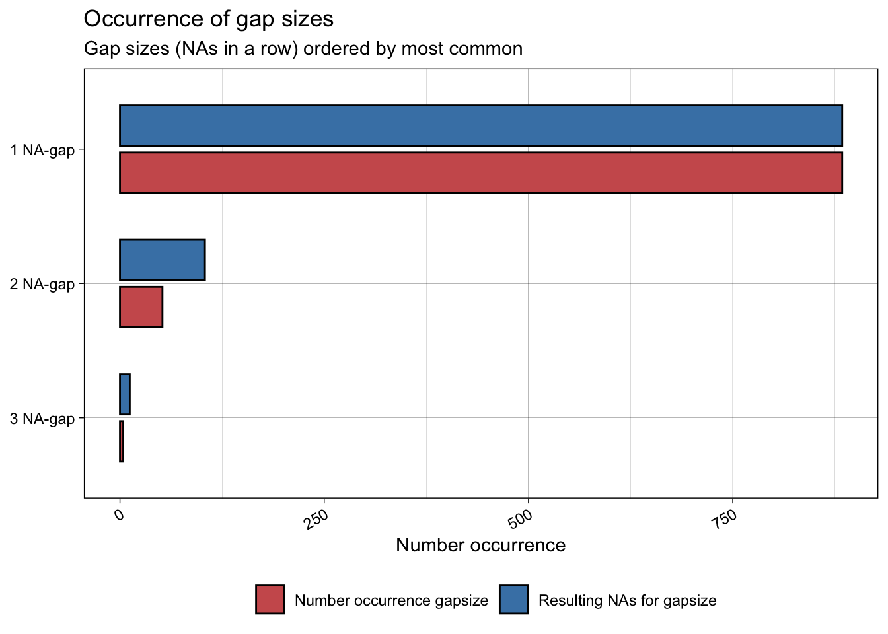

library(arrow) #To (quickly) read csv files
library(dplyr) #For data wrangling
library(ggplot2) #For plotting
library(imputeTS) #To impute data in data pipelinesIntroduction
A common problem we encounter when analysing data is the presence of missing data, NAs. How do we deal with NAs when we encounter them? In this blog post I’ll focus on different methods for dealing with NAs in R, with a particular focus on climatic time series.
Preparing our workspace
Packages
Below are all the packages that we’ll use in this example. Many of these are standard data science packages in R, but notice the inclusion of {imputeTS}, which is a tool specifically designed to deal with NAs in a time series.
Our example data
We’ll focus on a time series of temperature data from Melbourne, Australia (Source: Australian Bureau of Meteorology). This is actually a complete time series with no missing data, but we’ll generate 400 NAs in the time series at random.
full_data <- arrow::read_csv_arrow(file = "data/melbourne_temp.csv") %>%
mutate(date = lubridate::ymd(paste(Year, Month, Day)),
maxT_missing = maxT)
#Generate some NAs in the data
#We ensure that the last row can't become NA so that linear interpolation is always possible
set.seed(321)
full_data$maxT_missing[sample(1:(nrow(full_data) - 1), size = 400)] <- NAStep 1: Visualize the missing data
The first step to any analysis should be to inspect and visualize your data. Dealing with NAs is no different. If we know there are NAs in our time series we want to see when they occur and how often. {imputeTS} includes a number of in-built plotting functions to visualize NAs (e.g. ?imputeTS::ggplot_na_distribution) but here I’ve used {ggplot2} to make a set of custom plots.
First, we can look at which year the NAs occur in.
plot_data <- full_data %>%
group_by(Year) %>%
summarise(perc_NA = sum(is.na(maxT_missing))/n() * 100)
#The limit of the y-axis will be the nearest declie above the data
yaxis_lim <- (max(plot_data$perc_NA) %/% 10)*10 + 10
ggplot(data = plot_data) +
geom_col(aes(x = Year, y = perc_NA),
fill = "indianred", colour = "black",
linewidth = 0.25) +
# scale_fill_manual(values = c("steelblue", "indianred"),
# name = "", labels = c("Not NA", "Is NA")) +
scale_x_continuous(expand = c(0, 0)) +
scale_y_continuous(breaks = seq(0, 100, 5),
labels = paste0(seq(0, 100, 5), "%")) +
coord_cartesian(ylim = c(0, yaxis_lim)) +
labs(title = "Missing Values per Year",
subtitle = "Percentage of missing data in each year of the time-series",
x = "Year", y = "Percentage of records") +
theme_classic() +
theme(panel.grid.major.y = element_line(colour = "grey75", linewidth = 0.25))
ggplot() +
geom_line(data = full_data, aes(x = date, y = maxT_missing), colour = "steelblue2") +
geom_vline(data = filter(full_data, is.na(maxT_missing)), aes(xintercept = date),
colour = "indianred", alpha = 0.5) +
scale_x_date(expand = c(0, 0)) +
scale_y_continuous(expand = c(0, 0)) +
labs(title = "Location of missing values",
subtitle = "Time series with highlighted missing regions",
y = "Temperature (C)",
x = "") +
theme_classic()
full_data %>%
filter(Year == 2022) %>%
{ggplot() +
geom_line(data = ., aes(x = date, y = maxT_missing), colour = "steelblue2") +
geom_vline(data = filter(., is.na(maxT_missing)), aes(xintercept = date),
colour = "indianred", alpha = 0.5) +
scale_x_date(expand = c(0, 0)) +
scale_y_continuous(expand = c(0, 0)) +
labs(title = "Location of missing values",
subtitle = "Time series with highlighted missing regions",
y = "Temperature (C)",
x = "") +
theme_classic()}ggplot_na_gapsize(full_data$maxT_missing)
The basic method: Deletion
NAs include no information and cannot be used in statistical models. Therefore, the most common solution when encountering NAs is to simply delete them. This method is perfectly appropraite in many cases, but it can raise 2 key issues in any analysis:
Bias: If missing data are biased in some way, removing missing data will create bias in analysis. e.g. if temperature sensors tend to fail more at higher temperatures, removing NA values will bias our analysis towards lower temperatures.
Reduced statistical power: If we have many missing values, we will remove a lot of data and have lower statistical power to answer out questions.
So, what is the alternative? We can use imputation to fill in sampling periods where data are missing.
Method 1: Mean substitution
full_data <- full_data %>%
mutate(maxT_meansub = case_when(is.na(maxT_missing) ~ mean(maxT_missing, na.rm = TRUE),
TRUE ~ maxT_missing))Issue here: reduces effect of multi-variate analysis because imputed values will necessarily not be unrelated to other variables used in analysis (because all imputations are the same despite other variables being different).
An extreme example:
eg_lmdata <- tibble(x = 1:100) %>%
mutate(y = x*0.5 + rnorm(n = 100))
eg_lmdata$y[sample(x = 1:nrow(eg_lmdata), size = 40)] <- NA
eg_lmdata <- eg_lmdata %>%
mutate(y_fill = case_when(is.na(y) ~ mean(y, na.rm = TRUE),
TRUE ~ y))
lm(y ~ x, data = eg_lmdata) %>% summary()
Call:
lm(formula = y ~ x, data = eg_lmdata)
Residuals:
Min 1Q Median 3Q Max
-2.6184 -0.7792 0.2352 0.7237 2.3373
Coefficients:
Estimate Std. Error t value Pr(>|t|)
(Intercept) -0.049978 0.259576 -0.193 0.848
x 0.504576 0.004651 108.486 <2e-16 ***
---
Signif. codes: 0 '***' 0.001 '**' 0.01 '*' 0.05 '.' 0.1 ' ' 1
Residual standard error: 1.07 on 58 degrees of freedom
(40 observations deleted due to missingness)
Multiple R-squared: 0.9951, Adjusted R-squared: 0.995
F-statistic: 1.177e+04 on 1 and 58 DF, p-value: < 2.2e-16lm(y_fill ~ x, data = eg_lmdata) %>% summary()
Call:
lm(formula = y_fill ~ x, data = eg_lmdata)
Residuals:
Min 1Q Median 3Q Max
-15.2250 -5.9340 0.0968 5.9225 15.8661
Coefficients:
Estimate Std. Error t value Pr(>|t|)
(Intercept) 7.6047 1.4368 5.293 7.36e-07 ***
x 0.3205 0.0247 12.977 < 2e-16 ***
---
Signif. codes: 0 '***' 0.001 '**' 0.01 '*' 0.05 '.' 0.1 ' ' 1
Residual standard error: 7.13 on 98 degrees of freedom
Multiple R-squared: 0.6321, Adjusted R-squared: 0.6284
F-statistic: 168.4 on 1 and 98 DF, p-value: < 2.2e-16We will often want to do more complex multi-variate analysis, so this mean imputation is generally not useful!!
Method 2: Linear imputation
If we are focussing on multi-variate analysis we want a method that allows imputed values to vary. Linear imputation is one of the simplest methods to do this, especially when using time series data. We impute a missing value using a linear relationship between the points before and after the value itself.
This can be done using the ‘approx’ function in {stats}; however, this does not fit nicely within a {tidyverse} pipe coding. As an alternative, we can use the package {imputeTS}, which is a wrapper around basic {stats} functions (e.g. approx, spline) as well as other more complex imputation functions from other packages.
How does linear imputation work? [CREATE A GRAPH SHOWING THE IDEA!!]
imputeTS::na_interpolation(x = c(1, NA, 3), option = "linear")[1] 1 2 3#Notice that it only uses information from the 2 closest values
imputeTS::na_interpolation(x = c(4, 2, 1, NA, 3, 2, 7), option = "linear")[1] 4 2 1 2 3 2 7It will use a single linear model to estimate blocks of NAs
imputeTS::na_interpolation(x = c(1, NA, NA, 4), option = "linear")[1] 1 2 3 4Interprets blocks of NAs using the same linear model.
full_data <- full_data %>%
mutate(maxT_linearinterp = imputeTS::na_interpolation(x = maxT_missing, option = "linear"))Compare real and interpolated values
filter(full_data, is.na(maxT_missing)) %>%
mutate(diff = maxT - maxT_linearinterp,
sign = diff > 0) %>%
{ggplot(.) +
geom_histogram(aes(x = diff), bins = 15, colour = "black", fill = "grey75") +
geom_vline(xintercept = median(.$diff), lty = 2) +
theme_classic() +
theme(legend.position = "none",
axis.text.y = element_blank(),
axis.title = element_blank(),
axis.ticks.y = element_blank(),
axis.line.y = element_blank())}Method 2: Weighted mean
The approx function has an alternative where it interpolates gaps using a weighted mean of the left and right values. We define method as ‘constant’ and then weighting using ‘f’; where a value of 1 is fully right weighted (i.e. value will = the value on the right) and value of 0 is fully left weighted. Therefore, f = 0.5 is the same as taking the mean of the two nearest points.
imputeTS::na_interpolation(x = c(1, NA, 3), option = "linear", method = "constant", f = 0.5)[1] 1 2 3I guess this is a more sophisticated form of mean substitution, because all missing values in a block are given same.
imputeTS::na_interpolation(x = c(1, NA, NA, 4), option = "linear", method = "constant", f = 0.5)[1] 1.0 2.5 2.5 4.0There may be cases where we would want to weight more towards the left or right, but this seems very niche!
full_data <- full_data %>%
mutate(maxT_const = imputeTS::na_interpolation(x = maxT_missing, option = "linear", method = "constant", f = 0.5))Compare real and interpolated values
filter(full_data, is.na(maxT_missing)) %>%
mutate(diff = maxT - maxT_const,
sign = diff > 0) %>%
{ggplot(.) +
geom_histogram(aes(x = diff), bins = 15, colour = "black", fill = "grey75") +
geom_vline(xintercept = median(.$diff), lty = 2) +
theme_classic() +
theme(legend.position = "none",
axis.text.y = element_blank(),
axis.title = element_blank(),
axis.ticks.y = element_blank(),
axis.line.y = element_blank())}
Method 3: Spline interpolation
Another from {stats}. We can use different spline functions to fill in gaps. Unlike linear interpolation, spline interpolation uses more data either side of missing value. Makes sense! Would be impossible to fit spline to 2 data points that would be anything but linear! In fact, I guess we can recreate linear by using spline on data with only 1 value either side.
#This is just the same as a linear model because the spline doesn't have any more detail
#to form a more complex spline
imputeTS::na_interpolation(x = c(1, NA, 3), option = "spline")[1] 1 2 3#Once we provide more data, imputation can fit a more complex spline
imputeTS::na_interpolation(x = c(3, 2.5, 2, 1, NA, 0.75, 0, -0.5, -1), option = "spline")[1] 3.0000000 2.5000000 2.0000000 1.0000000 0.8142007 0.7500000 0.0000000
[8] -0.5000000 -1.0000000There are 5 types of splines that we can use (need to study them more closely). However, for visual inspection we can also get the spline function back using splinefun() in {stats}.
#Demonstrate how it works
test_df <- tibble(x = 1:9,
y = c(3, 2.5, 2, 1, NA, 0.75, 0, -0.5, -1))
fmm_func <- splinefun(x = test_df$y, method = "fmm")
periodic_func <- splinefun(x = test_df$y, method = "periodic")Warning in splinefun(x = test_df$y, method = "periodic"): spline: first and
last y values differ - using y[1L] for bothnatural_func <- splinefun(x = test_df$y, method = "natural")
monoH.FC_func <- splinefun(x = test_df$y, method = "monoH.FC")
hyman_func <- splinefun(x = test_df$y, method = "hyman")
spline_df <- tibble(x = seq(1, 9, 0.1)) %>%
mutate(fmm = fmm_func(x = x),
periodic = periodic_func(x = x),
natural = natural_func(x = x),
monoH.FC = monoH.FC_func(x = x),
hyman = hyman_func(x = x)) %>%
tidyr::pivot_longer(cols = fmm:hyman, names_to = "spline", values_to = "y")
ggplot()+
geom_point(data = test_df, aes(x = x, y = y)) +
geom_line(data = spline_df, aes(x = x, y = y, lty = spline)) +
theme_classic()Warning: Removed 1 rows containing missing values (`geom_point()`).
Compare the different splines
Fit all the different splines.
spline_data <- full_data %>%
mutate(maxT_fmm = imputeTS::na_interpolation(x = maxT_missing, option = "spline", method = "fmm"),
maxT_periodic = imputeTS::na_interpolation(x = maxT_missing, option = "spline", method = "periodic"),
maxT_natural = imputeTS::na_interpolation(x = maxT_missing, option = "spline", method = "natural"),
#NOTE: monoH and hyman both assume monotonic data (i.e. data should either never increase or decrease)
#This is not expected for temp data and (unsurprisingly) these spline methods fail
# maxT_monoH = imputeTS::na_interpolation(x = maxT_missing, option = "spline", method = "monoH.FC"),
# maxT_hyman = imputeTS::na_interpolation(x = maxT_missing, option = "spline", method = "hyman")
) %>%
tidyr::pivot_longer(cols = maxT_fmm:maxT_natural, names_to = "spline_method", values_to = "maxT_impute")Compare real and interpolated values
filter(spline_data, is.na(maxT_missing)) %>%
mutate(diff = maxT - maxT_impute,
sign = diff > 0) %>%
{ggplot(.) +
geom_histogram(aes(x = diff), bins = 15, colour = "black", fill = "grey75") +
geom_vline(xintercept = median(.$diff), lty = 2) +
facet_wrap(facets = ~spline_method) +
theme_classic() +
theme(legend.position = "none",
axis.text.y = element_blank(),
axis.title = element_blank(),
axis.ticks.y = element_blank(),
axis.line.y = element_blank())}
Method 4: Stineman imputation
Final option is na_interpolation. Uses algorithm in Stineman 1980.
#Here essentially still linear
imputeTS::na_interpolation(x = c(1, NA, 3), option = "stine")[1] 1 2 3I guess this is a more sophisticated form of mean substitution, because all missing values in a block are given same.
imputeTS::na_interpolation(x = c(3, 2.5, 2, 1, NA, 0.75, 0, -0.5, -1), option = "stine")[1] 3.000 2.500 2.000 1.000 0.875 0.750 0.000 -0.500 -1.000There may be cases where we would want to weight more towards the left or right, but this seems very niche!
full_data <- full_data %>%
mutate(maxT_stine = imputeTS::na_interpolation(x = maxT_missing, option = "stine"))Compare real and interpolated values
filter(full_data, is.na(maxT_missing)) %>%
mutate(diff = maxT - maxT_stine,
sign = diff > 0) %>%
{ggplot(.) +
geom_histogram(aes(x = diff), bins = 15, colour = "black", fill = "grey75") +
geom_vline(xintercept = median(.$diff), lty = 2) +
theme_classic() +
theme(legend.position = "none",
axis.text.y = element_blank(),
axis.title = element_blank(),
axis.ticks.y = element_blank(),
axis.line.y = element_blank())}Method 5: Weighted moving average
Linear imputation or ‘constant’ option (from {stats} approx()) use just the adjacent values, but we can often benefit from using information from more nearby values. We can do this with a weighted moving average.
Key arguments:
k: Size of the window to calculate moving average. NOTE: This is size to either side of the NA that will be used, “this means for an NA value at position i of a time series, the observations i-1,i+1 and i+1, i+2 (assuming a window size of k=2) are used to calculate the mean.” (from help).weighting: Method to use for weighting values.simple: All values are equally weightedlinear: Weight decreases linearly with distance from i. If x is the distance from i, then value has a weight 1/(1 + x), such that the nearest values have weight of 1/2, 1/3, 1/4 etc.exponential: Weights decrease exponentially. If x is the distance from i, then value has a weight 1/2^x.
#This will be identical to using "constant" from `approx()` no matter what method we use!
#We are only looking at the two nearest neighbours
imputeTS::na_ma(x = c(3, 1, NA, 3, 10), k = 1)[1] 3 1 2 3 10imputeTS::na_interpolation(x = c(3, 1, NA, 3, 10), option = "linear", method = "constant", f = 0.5)[1] 3 1 2 3 10As we expand the window, we can get a more nuanced value. No longer the same as using ‘constant’.
imputeTS::na_ma(x = c(4, 3, 1, NA, 3, 4, 10), k = 3, weighting = "simple")[1] 4.000000 3.000000 1.000000 4.166667 3.000000 4.000000 10.000000Can use different methods to adjust weighting. Note above that 10 is having a large effect on the returned value even though it is 3 time steps away. We could use linear or exponential weighting to minimize this effect.
imputeTS::na_ma(x = c(4, 3, 1, NA, 3, 4, 10), k = 3, weighting = "linear")[1] 4.000000 3.000000 1.000000 3.615385 3.000000 4.000000 10.000000imputeTS::na_ma(x = c(4, 3, 1, NA, 3, 4, 10), k = 3, weighting = "exponential")[1] 4.000000 3.000000 1.000000 3.142857 3.000000 4.000000 10.000000Compare real and interpolated values for each weighting method. For now, we just use default window size k = 4 (i.e. using 8 values in total towards mean)
movingavg_data <- full_data %>%
mutate(maxT_mas = imputeTS::na_ma(x = maxT_missing, weighting = "simple"),
maxT_mal = imputeTS::na_ma(x = maxT_missing, weighting = "linear"),
maxT_mae = imputeTS::na_ma(x = maxT_missing, weighting = "exponential")) %>%
filter(is.na(maxT_missing)) %>%
tibble::rowid_to_column() %>%
tidyr::pivot_longer(cols = maxT_mas:maxT_mae, names_to = "weight_method", values_to = "maxT_impute")
filter(movingavg_data) %>%
mutate(diff = maxT - maxT_impute,
sign = diff > 0) %>%
{ggplot(.) +
geom_histogram(aes(x = diff), bins = 15, colour = "black", fill = "grey75") +
geom_vline(xintercept = median(.$diff), lty = 2) +
facet_wrap(facets = ~weight_method) +
theme_classic() +
theme(legend.position = "none",
axis.text.y = element_blank(),
axis.title = element_blank(),
axis.ticks.y = element_blank(),
axis.line.y = element_blank())}Overview: Use LOO-CV to look at effectiveness of different techniques
LOO_impute <- function(fn, x, i, ...){
if (i > length(x)) {
i <- length(x)
warning("i is larger than number of data points. i reduced to match length(x).")
}
missing_index <- sample(1:length(x), size = i, replace = FALSE)
results <- purrr::map_df(missing_index, .f = function(missing_index){
#Assign to a new vector
x_missing <- x
#Give an NA
x_missing[missing_index] <- NA
#Extract known value and imputed value
x_true <- x[missing_index]
x_imp <- fn(x_missing, ...)[missing_index]
tibble(true = x_true,
imputed = x_imp)
})
results %>%
mutate(diff = (imputed - true)^2) %>%
summarise(MSE = sum(diff)/n()) %>%
mutate(RMSE = sqrt(MSE))
}So how do our different methods compare?
results <- tibble(method = c("linear_interp",
"spline_fmm",
"stine",
"ma_simple",
"ma_linear",
"ma_expo")) %>%
mutate(do.call(bind_rows,
args = list(LOO_impute(fn = na_interpolation, i = 5000, x = full_data$maxT),
LOO_impute(fn = na_interpolation, i = 5000, x = full_data$maxT, option = "spline", method = "fmm"),
LOO_impute(fn = na_interpolation, i = 5000, x = full_data$maxT, option = "stine"),
LOO_impute(fn = na_ma, i = 5000, x = full_data$maxT, weighting = "simple"),
LOO_impute(fn = na_ma, i = 5000, x = full_data$maxT, weighting = "linear"),
LOO_impute(fn = na_ma, i = 5000, x = full_data$maxT, weighting = "exponential"))))
results# A tibble: 6 × 3
method MSE RMSE
<chr> <dbl> <dbl>
1 linear_interp 12.4 3.52
2 spline_fmm 14.2 3.77
3 stine 11.5 3.39
4 ma_simple 17.2 4.15
5 ma_linear 15.6 3.95
6 ma_expo 14.2 3.77